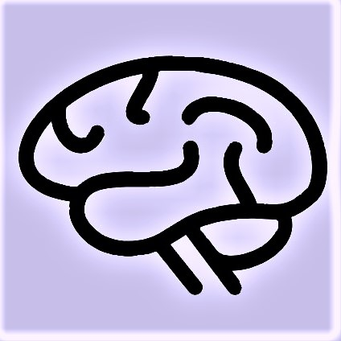

Hello! My name is Carolyn Campbell. Born and raised in San Luis Obispo and recently returned from the pacific northwest, I am a person of diverse interests and talents:
|
classical music: specializing in choral singing and classical piano, I've had the privilege to perform in Carnegie Hall, conduct my high school choirs, perform piano accompaniments, write arrangements for an a cappella group and a handbell ensemble, collaborate with concert pianists for an 8-piano piece, and perform internationally. I'm currently teaching myself to play mandolin. |

psychology: apart from music, my education focused around neuroscience, sensation/perception, and cognition. I'm fascinated with how individuals percieve unique worlds due to different physiologies, biases, and emotional landscapes. This is influenced by personal experiences of abnormal vision and a family member's learning disabilities. |
|
making a difference: I feel helping others is part of my purpose. In high school I worked with Deaf children at a speech/language-pathology summer camp, and after college I utilized Applied Behavior Analysis in my work with students with severe autism. I'm passionate about issues of accessibility and disability identity. |
animals and nature: I adopted my dog Riley in 2017 while living in Seattle; since she's an anxious rescue, I utilize behavior analytics in her training/rehabilitation. I love sharing adventures with her through hiking, trail running, and camping. |
What makes me me?
creative ~ intelligent ~ curious ~ thoughtful ~ calm ~ independent ~ analytical ~ compassionate